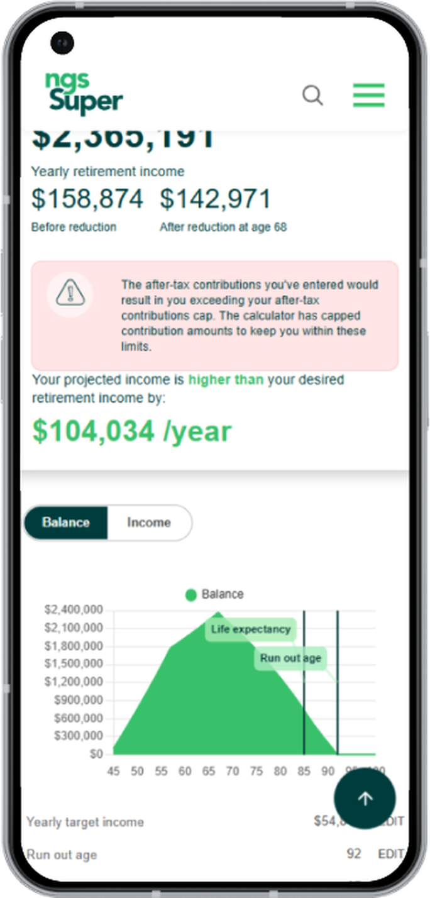
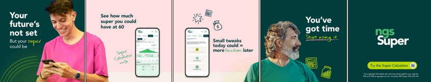
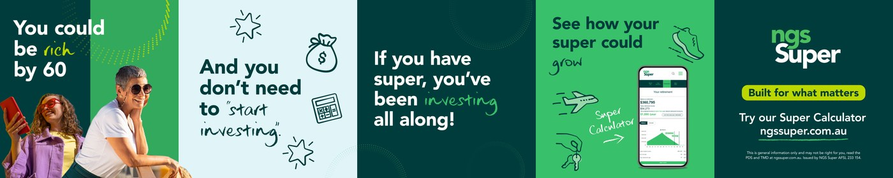

Case study
The name was
the barrier
A retirement projection tool that only a narrow slice of members would ever open. Changing one word changed who used it.

Built mobile first, because that is where members check their super. Projections update live as inputs change, and a contribution cap breach is caught and explained in plain language rather than rejected.
See it onlineThe loop
Ship, measure, change
The calculator did not arrive at the top of the site. It got there over four rounds of the same cycle.
The Retirement Calculator goes live
Mobile first, live recalculation, contribution caps explained in plain language. On its own terms it did what it was built to do.
Only two cohorts were opening it
Engagement sat almost entirely with members in the comfortable middle, and people already in transition to retirement. Everyone else ignored it.
The product was not the problem. A thirty year old does not click on a retirement calculator, because retirement is not a word they think applies to them yet.
Renamed it, and rebuilt every path to it
Super is a word every member already owns. It carries no life stage, so nobody rules themselves out before they click.
Behind the rename sat a redirect programme across website pages, member guides and PDFs. The redirect map was built before the rename went live, not after, so the search equity the tool had earned came with it.
A broader name only helps if a broader audience sees it
The barrier at the door was gone, but the members we had been missing still were not arriving. Nothing was reaching them where they actually spend their time.
Took it to TikTok and Instagram
A paid social campaign aimed at the younger members the tool had been failing to reach. Two routes into the same idea, tested against each other rather than assumed.


Route B reframed super as investing the member is already doing, rather than something to start. Both ran, and the results decided which we kept.
Members were coming for it, and we had it buried
Usage kept climbing while the calculator sat under tools and documentation, which is where useful things go to be forgotten. The traffic was telling us this was a front door, not a footnote.
Made the case for the homepage
It sits on the most valuable space the site has. Not because it is a nice tool, but because members had spent months telling us with their behaviour that it was the thing they came for.
This was the recommendation I put up, backed by the engagement data. The decision was made with marketing and product, and scope had to be agreed with technology before anyone committed.
Climbing every month since the rename
Clicks doubled. Search Console Insights has the page up 101 per cent on the previous period, and over the last three months it drew 206,000 impressions and 943 clicks. It was also the fastest growing page on the whole site month on month, ahead of careers and investment performance.
Weekly clicks, Google Search Console
Average position 10.7, so the next gain is free
The page sits just outside the top ten and converts half a per cent of the impressions it already earns. Most people searching never see it.
Two levers, in order. Rewrite the title and snippet to earn more of the clicks already on offer, then work the internal linking and content depth to move it into the top five. Neither needs a redesign.
The most visited page on the website
It reaches well beyond the cohort it started with, and the measurement is now in place to justify each change.
Still going
What I took from it
Naming is a product decision
We shipped a good tool and assumed the language around it was neutral. It was not. The word on the button decided who felt invited, and we had not tested it the way we would test anything else.
I would test the name next time, before launch, alongside the interface. It is cheaper than a redirect programme and it would have saved us the first round of this loop entirely.